Using Vulnogram with CVE Services

Vulnogram - Reserve, Manage, Publish CVEs.
1. Access Vulnogram
Open Vulnogram.org for a quick start. The instance on Vulnogram.org enables CNAs to use the browser to draft, manage, and publish CVE records. To enable multiple CNA team members to collaborate on drafts in a cental place, download and set up Vulnogram in Team server mode.
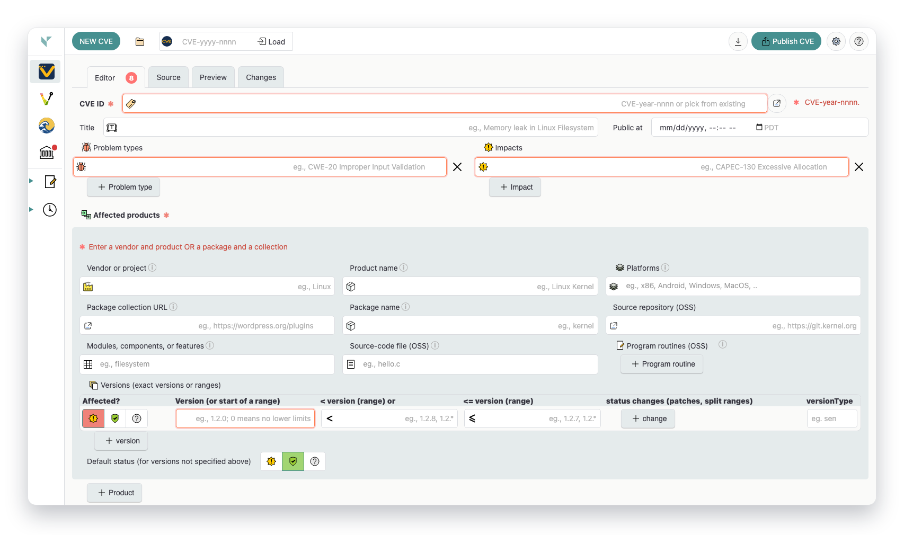
Access Vulnogram at https://www.vulnogram.org.
2. Login to CVE Services
Open the CVE Portal panel, select the target portal (production, test, adp-test, or local), and authenticate with your CNA short name, CVE user, and API key.
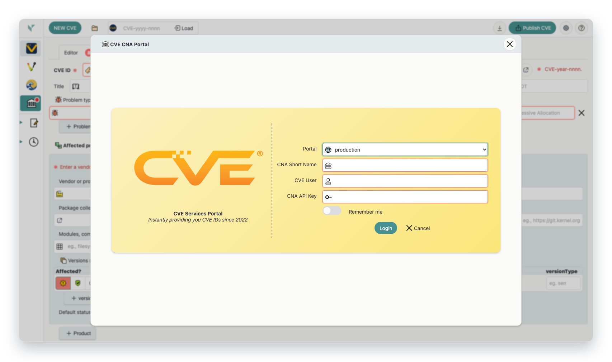
CVE Services login form from the CVE Portal sidebar action.
3. Reserve CVE IDs
After login, use Reserve One CVE or the dropdown batch actions to reserve IDs for the current year, next year, or previous year. Use state/year filters to find reserved IDs.
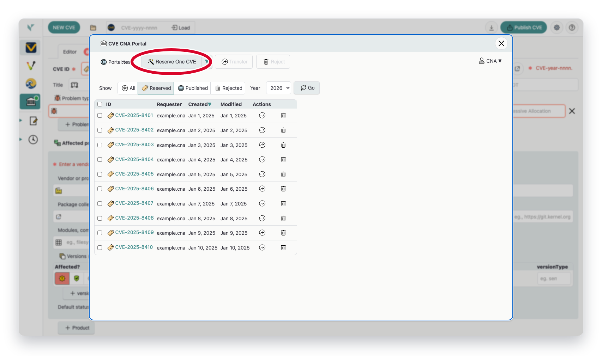
CVE Portal reserve controls with state and year filters.
4. Enter CVE Record Details
Use the Editor tab to enter vulnerability details, affected products, references, and metrics. Switch between Editor, Source, and Preview tabs while drafting.
For repeated CNA or ADP work, open the Configure Default Settings dialog from the top-right settings button . It lets you simplify the form for new entries by choosing default set of fields to show and by setting default vendor, product, and version-type values, which helps reduce repetitive edits and keeps new records more consistent.
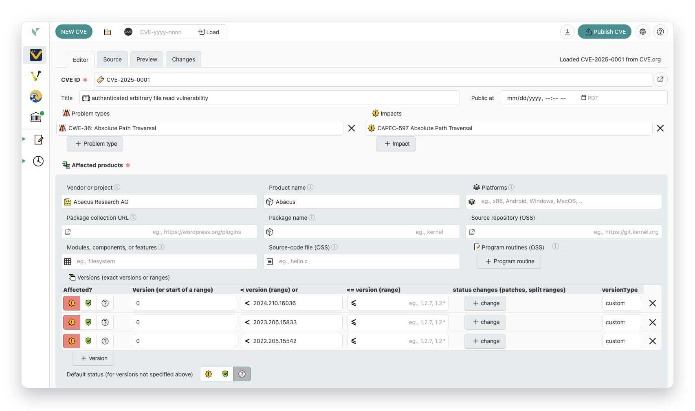
Primary Editor form where record content is entered.
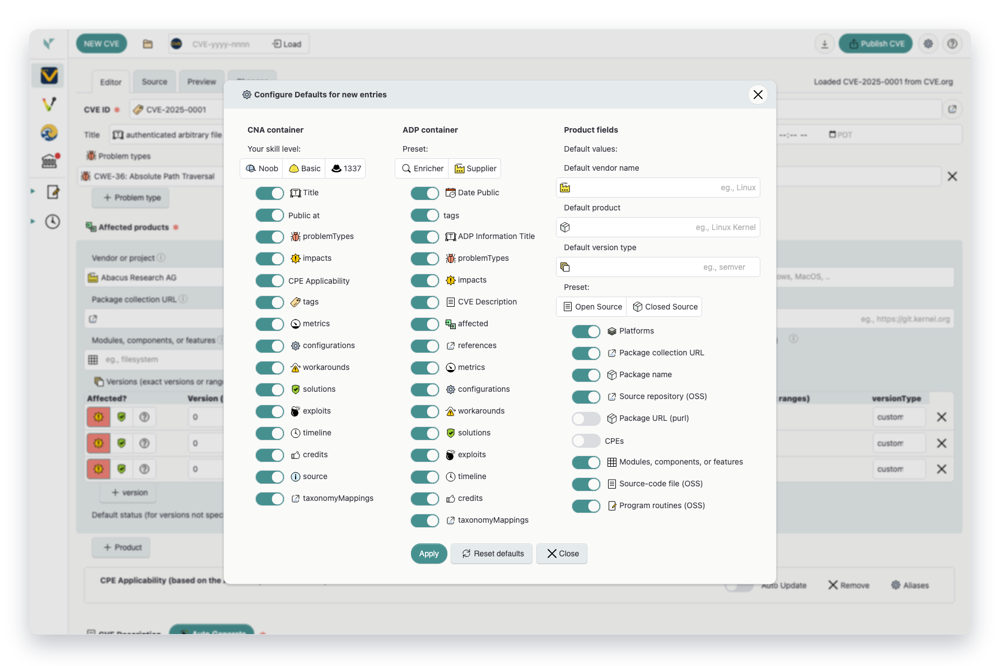
The settings dialog configures defaults for new entries.
5. Publish to CVE Services
Use Publish CVE to submit the record to the currently selected portal. In test mode, publishing targets the CVE Services test environment.
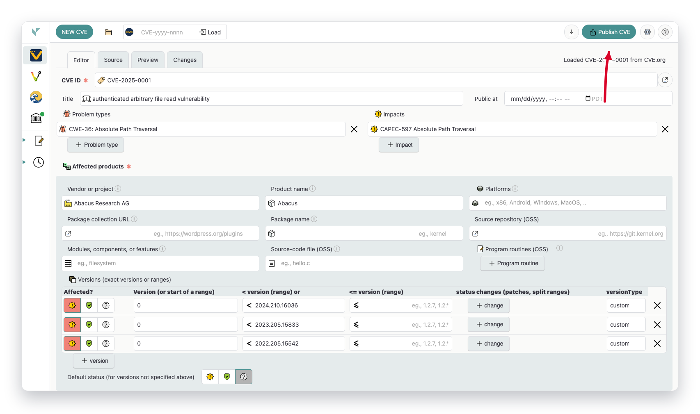
Top action bar with Publish CVE control.
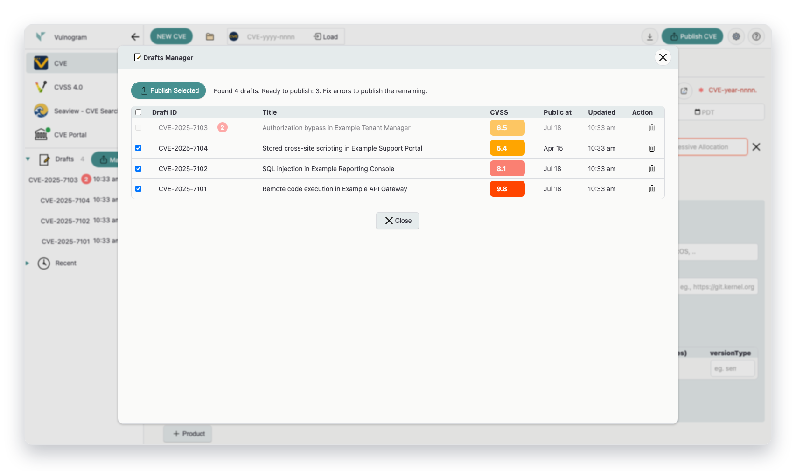
Drafts Manager with sample cached CVE entries ready for bulk publish.
6. Manage Users and API Keys (Admin)
Organization administrators can open Users in the portal view to add users, update profile and role attributes, disable accounts, and reset API secrets.
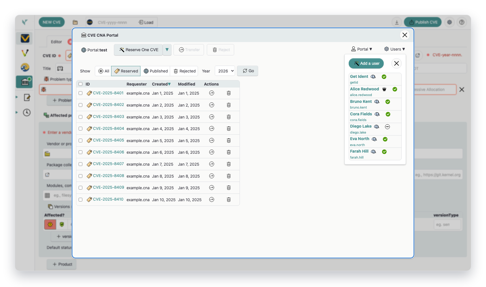
Admin-oriented Users management view in the CVE Portal.
7. How to Reject a CVE ID
Use Reject this CVE ID and Reject this ID controls to retire unused IDs or withdraw published records. The workflows below show where each reject action lives.
a) Rejecting Unused or Unpublished CVEs
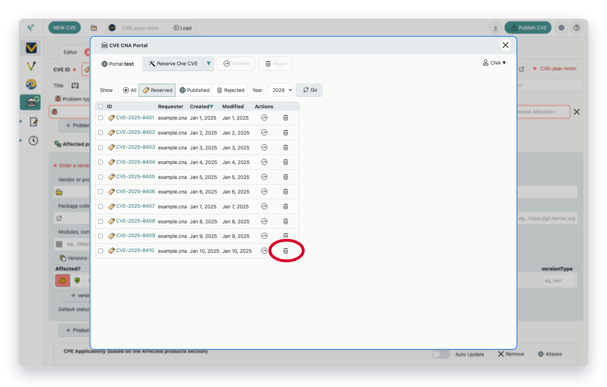
Unused/unpublished IDs can be rejected directly from Reject this CVE ID in the CVE list action column.
b) Rejecting Published CVEs
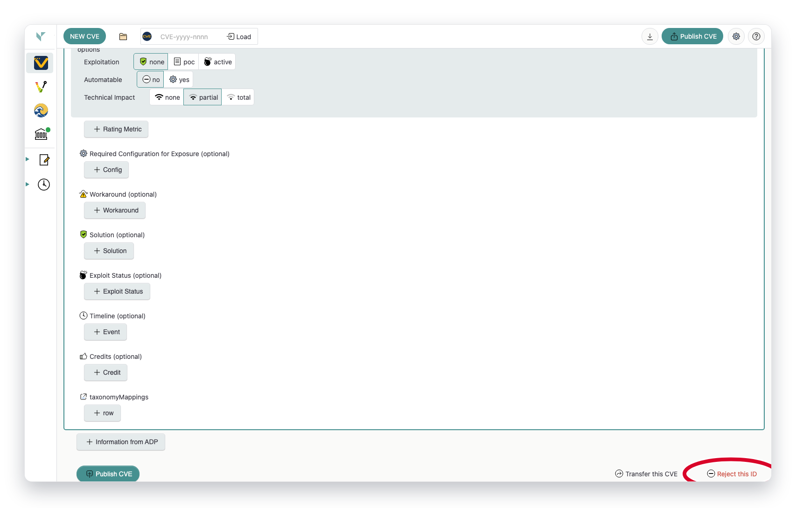
Published records are rejected from the editor footer Reject this ID link after loading the CVE.
c) Rejecting Multiple CVE IDs
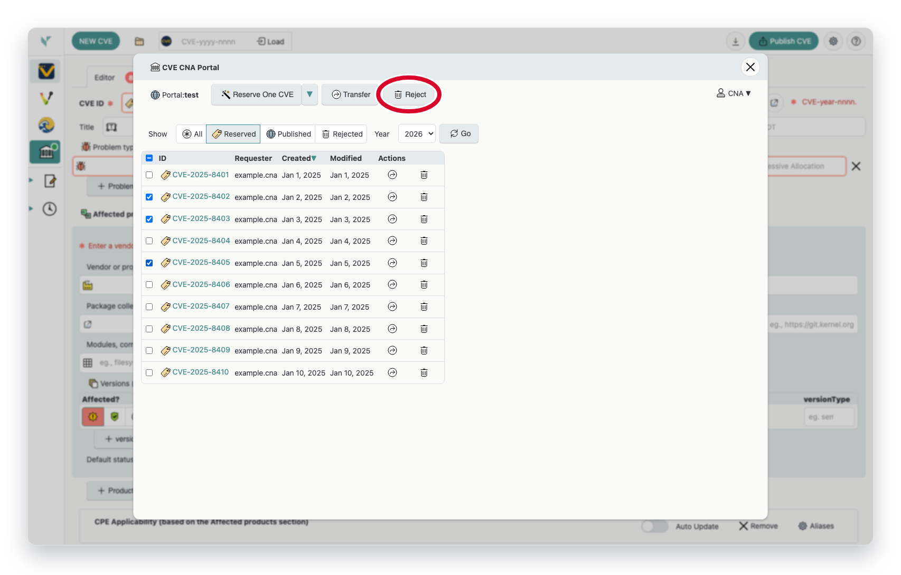
Select multiple IDs with the checkboxes, then use the Reject bulk action in the portal header.
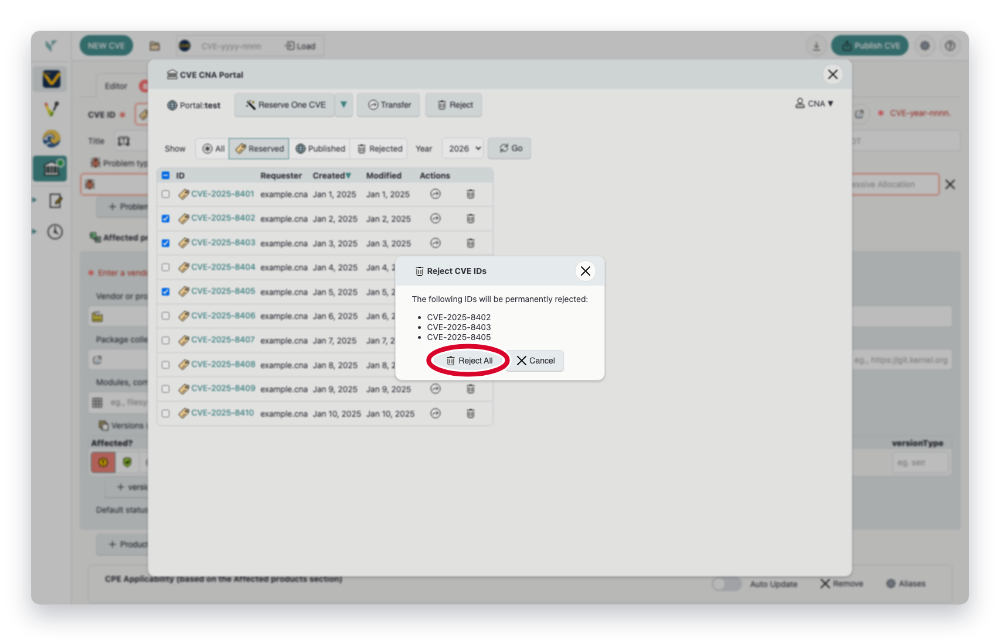
Review the listed IDs and confirm with Reject All. Rejection cannot be undone.
8. Transfer CVE IDs to Another CNA
Select one or more IDs with the checkboxes and use the Transfer bulk action in the portal header to move them to another CNA. A single ID can also be transferred with the Transfer this CVE ID action in the list's Actions column. In the transfer dialog, pick the receiving CNA and confirm.
⚠️ Warning: CVE Services does not notify the receiving CNA when a CVE ID is transferred to them. Always coordinate offline with the recipient CNA — and get their explicit agreement — before initiating a transfer.
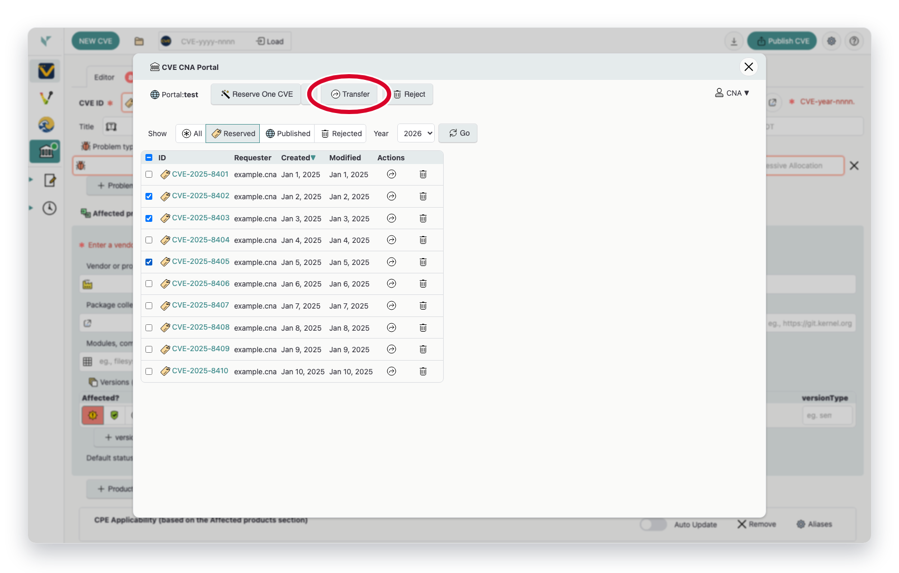
Select IDs and click Transfer, or use the Transfer this CVE ID row action for a single ID.
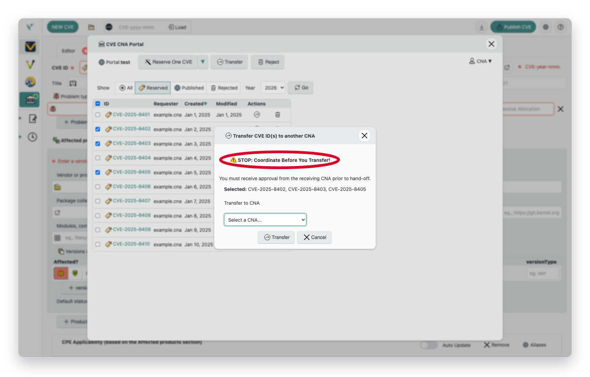
The transfer dialog lists the selected IDs and asks for the receiving CNA. Heed the highlighted warning: coordinate with the recipient CNA offline first, because CVE Services does not notify them.